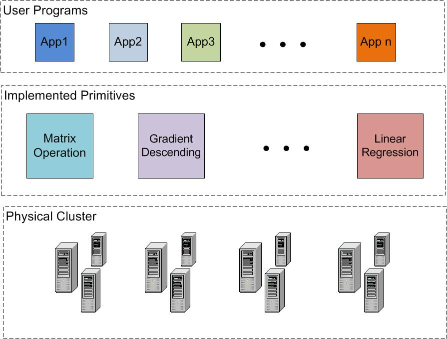

We are developing a user-friendly Machine Learning system, so that
You can analyze large volume of data efficiently, even you never learn programming stuffs
You can evaluate your new algorithms, even you are a machine learning expert but with limited system background
There have been some frameworks aiming to simply the work of programmers to run distributed computing tasks. For example, e.g. Hadoop [1], as an opensource implementation of MapReduce, tries to provide a simplified framework to run distributed computing tasks. The original design of Hadoop makes it unsuitable for machine learning tasks because of the IO overhead which becomes intolerable with the increasing of iterations of algorithms. Spark [2], a MapReduce-like system which relies on a distributed memory layer, performs much better than Hadoop in iterative computing tasks than Hadoop. However, designer of these frameworks are trying to provide general frameworks for programmers to implement algorithms, while in machine learning tasks, there are some common components existing in many algorithms, like gradient descending, etc..
In this part of our project, we are trying to provide a data processing infrastructure to handle these common tasks in a distributed manner which should be fast and reliable. Then we provide these services to users as the basic primitives to enable efficient running of machine learning algorithms.
